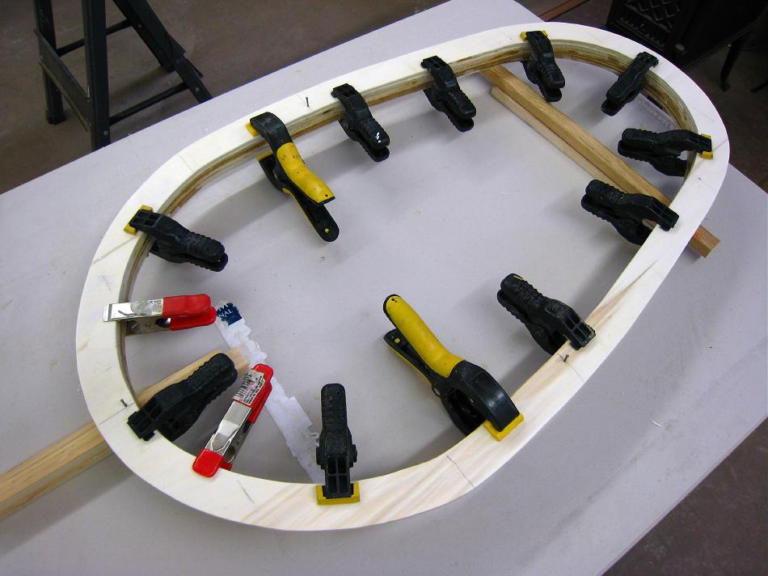

| Coaming | Menu Previous Page Next Page |
|

Apply a thin layer of T-88 glue or West System epoxy resin to the rings (2ea) and coaming lip and clamp for gluing. Wipe off any epoxy that runs before it sets up. Place small supports under the coaming to keep it from sitting directly on the table. Allow the epoxy to cure overnight. Note the small finishing nails that are drilled and positioned to align the rings for gluing.
|
|